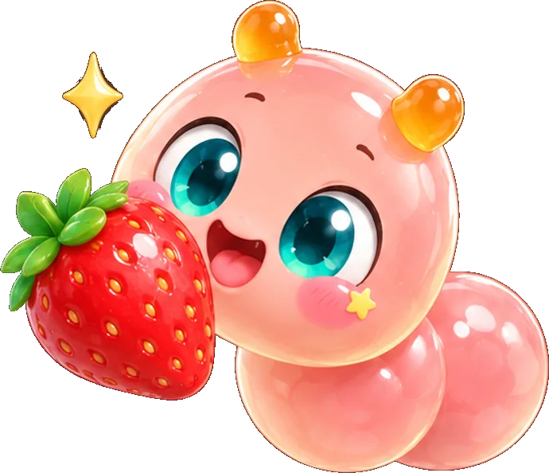
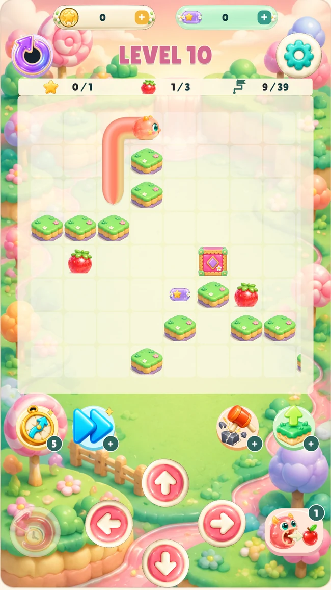
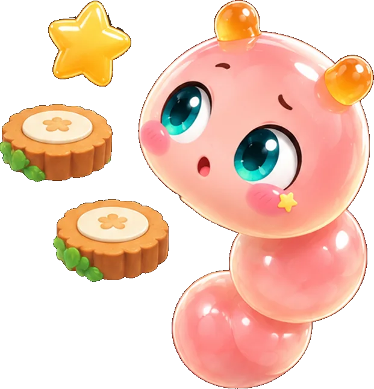
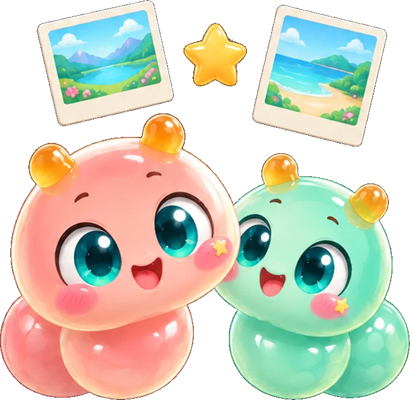

Small bites.
Big little
adventures.
A curious jelly. A candy-colored world.
And one more clever move waiting to happen.

A soft little world.
A clever little twist.
Follow your appetite. Find your way.
Sometimes the smallest move makes all the difference.

Actual game screen
Hungry for a little adventure?
Collect the strawberries, grow your jelly and reach the exit. A deliciously simple idea with lovely little surprises along the way.
One strawberry.
Your move.
Try this tiny browser puzzle inspired by the game. Find the strawberry, then head for the flag.

A strawberry is waiting. Let’s find it!
Your mood.
Your little jelly.
A peachy start, a minty mood or a berry lovely day.
Pick a friend. There’s no wrong flavor.

Peach Pop
A little sunshine. A big appetite.
Lovely views.
Sweet little keepsakes.
Discover scenic wallpapers in the game,
keep your favorites in your backpack,
and save a little piece of your adventure.
See the little
adventure in motion.

Your next little
happy place.
A little adventure for your pocket.
Explore your favorite app store and meet your next little friend.
A little puzzle. Wherever you play.
A helping
little hand.
Have a question or spotted a wobbly little bug?
Our jelly crew is here to help.
Our official player-support email will be added before launch.
How do I play Nibble Quest?+
Collect the strawberries, grow your jelly and guide it to the exit. Use the platforms, push blocks and try a different move when a puzzle gets tricky.
Can I undo a move?+
Yes. Tap the pink returning-arrow button to step back. You can also restart a level and try a fresh route.
Buttons or swipe controls?+
Your choice. Open Settings, choose Controls and pick the style that feels right for you.
What are the wallpapers?+
They’re collectible scenic pictures. Find your unlocked wallpapers in the backpack, favorite a view or open it to save. This website shows a small preview of the collection.
Where can I find the app stores?+
Use the App Store and Google Play buttons above to open your preferred store.